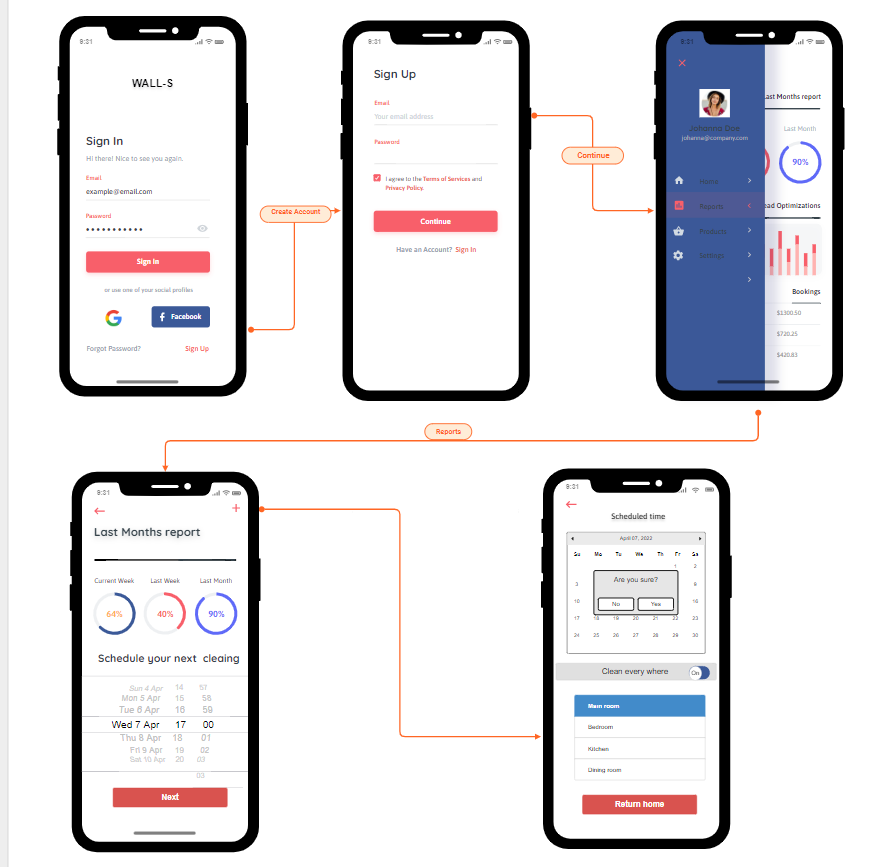

My name is Aaron Caridakis and I am 18 years old. I graduated high school from Werribee Secondary College and now I am completing further studies at RMIT as a first year, doing the Bachelor of Information Technology (BP162). I was born in Australia and have Indonesian / Greek parents however, I can only speak English. In my spare time I enjoy listening to music, watching Korean dramas and playing video games. But I have one hobby which I hold close to me, baseball. My interest in baseball began around 12 years old after my father encouraged me to play. I used to play for the Newport Baseball Club, however I stopped due to an injury. I have a natural strong interest in IT due to the enjoyment I find in playing video games with friends. I don’t have much experience working in the IT industry.
My name is Ali Arbaboun, 18 years old and I come from Iran. This is my first year at RMIT pursuing my passion for Information technology. My interest in IT comes from multiple aspects of the industry, such as the security aspect (Cyber Security), the idea of ‘ethically’ hacking, to find the weakness in code and prevent Cyber-attacks as well as Artificial intelligence. My interest in IT began when I started to volunteer at a community center to solve their IT issues when it came down to live streams. My experience in IT also developed through a year 10 excursion to an IT event that sparked my interest in IT. My hobby is playing ‘professional’ indoor soccer on the weekends.
My name is Gabriel Arancibia (Gabe for short), and I am 19 years old. I graduated from Taylors Lakes Secondary College and am now continuing my education in a Bachelor of Information Technology at RMIT. I was born in Australia, and I have Italian/Chilean parents, and currently trying to learn Spanish. Some of my favourite hobbies consist of reading, playing soccer, video games and music production. My interest in IT grew as I was doing a software development class, in which creating programs and designing how they function was a main part of the class and fascinated me, as also was learning about ethical hacking to safeguard people’s systems and hardware from any attacks.
Hi, my name is Ronald (Ron for short) Ray Tran, Student number and email is s3895395@student.rmit.edu.au. I was born in Australia and am Vietnamese but can barely speak it. I am currently undertaking the Bachelor of Information Technology at RMIT due to my previous course being discontinued (Bachelor of Business Information Systems (Applied)). My favourite past time is to read Japanese and Korean fiction.
My name is William Gardiner. I am an Australian student studying a Bachelor of Information technology at RMIT. My education history consists of completing high school VCE in 2021. I speak English. An interesting fact about me is that I made a film last year (2021) called Clone: the film. My hobbies consist of watching anime, shows and playing games. My interest in IT stems from my enjoyment of games and VR (Virtual Reality), that is the main reason for my interest. My experience with IT is minimal but consists of using IT daily through my computer and phone.
I am a current Australian resident however I was born and raised in Lahore, Pakistan until the age of 12 when I moved to Australia. Education-wise I have successfully completed year 12 at Berwick College and I am currently enrolled in the Bachelor of Information Technology course at RMIT. The languages I speak include English, Urdu, Hindi, and Punjabi. Now for the interesting fact about myself: Well to sum it up-My family nearly had to go through my death when I portrayed symptoms of “Death Rattle” trying to fight Dengue Fever. My favourite sports are categorized in order as Cricket on top and basketball and soccer plus table tennis to follow.
Overall, the group worked to finish assignment 2 in time with each member fulling their assigned parts with some members pulling more weight. Communication was lacking with impromptu meetings and dead silence for periods of time which resulted in a late start to the assignment and some members not being on schedule. For assignment 3 our group will be holding more frequent meetings and progress checks to ensure that every member is on track. Additionally, the group has clearly designated the task and expectations that each member needs to do in order to complete assignment 3.
Three group members have similar careers paths following the security field with 2 members being in the engineering field and one member in system administrating. Ali's ideal job is Lead Architect – Security which involves being responsible for designing, building, testing and implementing security systems within an organisation’s IT network. Similarly Gabriel and Ronald's ideal job are both connected to security being IT Security Specialist and Cyber Security Analyst respectively. Both jobs are similar with the goal of protecting people, devices, and data but Cyber security encompasses a smaller field of protecting users and systems from cyber related attacks whereas IT security does that and more where they protect against any type of computer related crime. William's ideal job is a Cloud Engineer which involves building and maintaining cloud infrastructure whereas in a completely different spectrum, Zaeem's ideal job is Machine Learning Engineer which involves machine learning engineers design and create the AI algorithms capable of learning and making predictions. The common element between these two fields of engineering is the building of complex algorithms to use for private and commercial applications whereas the previous jobs build algorithms to protect systems. Lastly Aaron's ideal job is It Systems Administrator which involves maintaining, supporting and troubleshooting computer servers and networks for organizations which is like William’s job of a cloud engineer where both need to maintain a system for an organization to use.
The audit trail in the group’s GitHub repository allows users to view data on commits and it shows which collaborators have done what in regard to the repository. However, this doesn’t fully reflect the actual work each group member has completed. This is because the whole GitHub pages / repository was created and worked on by Aaron alone. But the website could only be made due to the work everyone in the group has submitted so we could compile everything and create it all into a functioning website.
For our group the main way we communicated and created meeting to discuss work was through Microsoft Teams in a team called “FRI Group #6”. But some group members also created a group chat on Instagram to have talks about this assignment and how we’re going. We decided to also use Instagram as a tool of communication as it was much easier for others to use as we could still easily communicate with the other members even if we didn’t have access to our laptops or Microsoft Teams.
Everyone knows for sure that Robots are the way for a brighter future. What we propose todo in this project is to have a clear mindset/prototype and models ready that could depictwhat our Robot (Wall S) would’ve looked like if we had the proper tools and budget ofcreating and maybe even monetizing one. We are responsible for ensuring the prototypeswere turned in with an acceptable quality within the timeline. We set up guidelines andshared a style guide and checklist for helping team members to understand theexpectations. Multiple management strategies were implemented in the successful creationof this file. Risk Management consists of the identification, analysis, planning, tracking,controlling, and communication of threats to project success. All project risks should bemanaged through a formal process that includes a process to mitigate or eliminate negativeimpacts to the project, as well as develop contingency plans to lessen the impact on theschedule, scope or cost. Fortunately no major risk occurred during the production of thisreport or the prototypes. Furthermore, our main goal in this project was to perpetually see whether we as a team werecapable of even getting close to creating such an invention. These sorts of inventions areable to fetch top dollar as they are relatively new and perform wonders. Schedulemanagement was another criteria that we had hoped to work more efficiently on due tolacking this aspect in Assignment 2. Schedule management in any project is extremelyimportant as it paves the way for all members to complete their set tasks and goals on time,allowing for a better result.
The main motivation behind this however is the need to do something for people. This is a genuine and sad fact that people mostly go to hospital as a way of obtaining medicine ortreatment for their illness. Healthcare-associated infections (HAIs) are complications ofhealthcare and linked with high morbidity and mortality. Each year, about 1 in 25 U.S.hospital patients is diagnosed with at least one infection related to hospital care alone. For those who even go to a hospital or even a medical clinic for just a regular checkup could come back contracted with the worst of bacteria/infections.Some of the most common infections people transmit across medical clinics include but are not limited to: UTI, pneumonia and even lung infections. The need to help stop this due to lack of staff or lack of care provided, I feel that UV-C robots are the perfect way to transformour hospitals in the future if we genuinely want to save lives.
There are a few systems already available on the market such as the HOBOT legee 7. Various companies such as HOBOT and Kogan would be main competitors if we were to create this project on the basis of monetisation. Between our project and these readily available projects there are multiple differences. Firstly our business model is simple, instead of making obnoxiously sized and pricey robots, we would rather be making miniature models of the same project for a less costly price. Therefore, money input towards the project < total profit. So, for example, instead of ahospital purchasing a large machine to clean up a smaller surface area, they could purchase2, 3 of our smaller models to clean up the room which would not only be effective but also efficient for both the business to make money and the hospital to save money. Research suggests thatthe production cost of each robot without labour could easily cost $50+ per robot. Now if I were to produce one that's ⅓ of the size of an obnoxious one, you would estimate that my production cost would be around $15. Now those companies making their robots for $50+ are selling their product for around $600, which hospitals are hesitant to buy as the workforce per hour is cheaper. However, the aspect most hospitals do not realise is that the purchase of a robot is permanent whereas staff changes require depending. If I were to turn this idea into a business, I'd potentially look to profit at least $75 per robot, meaning sellingthe robot that cost me $15 for $100. Now think to yourself, would companies buy 1 largerobot for $600+ or 1 for $100 and add on as many as they want based on their demands. Not only this but this would speed up the process by around 50% as there could be robots working in multiple rooms at a time. Secondly, even though Kogan is already making 30$ robots, their production costs are estimated to be half of that and the quality and work radius is pathetic, something similar tobuying knockoff airpods.
- To create prototypes of an ultraviolet-disinfection robot.
- To create a succinct report regarding our prototyping of our project idea
- To create a detailed team profile
- To create an engaging and sophisticated website to present our information on
- To create an appropriate jobs and skills section according to the marking rubric
- Provide feedback for each group member and the group itself via SparkPlus
The aim of our project is to create prototypes of our ultra-violet disinfection robot. As we have limited time in creating the robot, making the robot was out of the question and as a group chose to just create prototypes using figma and sketches. This was the best option in our situation as it would be near impossible to create such sophisticated technology with little experience in such little time.
A smaller goal of ours was to create a succinct report regarding our prototyping of our project idea. This included everyone in the group completing their parts of the report to a sophisticated level and proofreading our report before submission. This was an important goal as the report portion of the assignment was worth 50 % of the overall mark of the assignment.
The second smaller goal of our assignment was to create a detailed team profile. Though this was not one of the most important goals, it still has its place as it still holds 5 marks of the assignment. It was important to make the team profile as detailed as possible to get full marks for the team profile part of the assignment.
The third smaller goal was to create an engaging and sophisticated website to present our information. This goal is aligned with the tool's parts of the rubric and would net us 5 marks if our website is exceptionally good. This was important as all marks count towards the assignment, and a website is good to display our skills in IT to potential future employers.
The fourth smaller goal was to create an appropriate jobs and skills section according to the marking rubric. This section was important as it outlines the people required for us to build our robot after making the initial prototypes in figma and sketches. A substantial portion of the marks were allocated here (15 marks) so more effort must be placed on this area.
The fifth and final smaller goal was to provide feedback for each group member and the group itself via SparkPlus. This was important as in the assignment two group members did not provide feedback, so it is especially important to give feedback for each member this time around.
The project that Deep Blue is building is a medical sanitation robot that uses UV-C irradiation which can improve sanitization by 60% compared to liquid-based cleaning while also reducing cost of labor and saving time on the disinfection process.
The robot moves automatically in a defined area, after being programmed for things like time and distance from surfaces. It is made up of multiple lamps placed on top of a platform. During disinfection, the Robots emit UV-C irradiation at a wavelength of around 200-300 nanometers, allowing for a full 360-degree coverage. During the disinfection process, the robot moves at a steady speed, achieving a coverage of areas at several meters. The area that the robot has been programmed to clean will need to stay in the exact same place/ order due to the robot stopping cleaning completely if any motion is detected.
To begin, Zaeem had the idea of an ultra-violet disinfection robot as his project idea. We chose the idea as our main project due to most of our group choosing our project ideas as making a video game, which we did not think would have been the best idea. We then landed on Zaeem’s idea which seemed more sophisticated/ professional than a video game and more related to IT. Once the idea was picked, we got to work on assignment 2, and eventually it was finished and submitted. This takes us to Assignment 3, in which the focus of the assignment was on making prototypes of the project idea.
The First week was used to organize our respective tasks and roles for Assignment 3 and the project where we discussed what skills we had to learn and what was expected of each other for the assignment.
The Second and third week we begin working on our individual tasks assigned to each of us where progress on each of our parts was smooth. Gaberial and Ronald were researching what roles we would be needing if we had an opportunity from investors to expand which we figured out were a machine learning engineer, mechatronics engineer, robotics engineer and electrical engineer. They also started researching how to make job hiring ads for them as assigned from the assessment. Zaeem was working on polishing and figuring out the project details. William was working our timeframes for the project and assignment which helped give our group a schedule. Ali worked and planed our group communication and Aaron figured out the risks of the project and assigned roles to every member.
The fourth and fifth week, Aaron began building the website using HTML and CSS which we would place the assignment onto. Ronald began researching every group members ideal jobs and began comparison between a lead architect-security, cyber security analyst, IT security specialist, cloud engineer, machine learning engineer and a systems administrator. Zaeem begin figuring out the projects scopes and limits which were the production cost of the robot, time shortage for both the production of the robot, the coding of the robot and everyday user app that would allow users to set where they would like the robot to clean. Ali began planning and developing a prototype of the app used to control the robot on Figma. Additionally, Zaeem coordinated group tests on the prototype to fix any bugs and issues while also polishing the app.
At the stage of writing (the sixth week) this we have made two protypes through Figma in the form of an app that would be used to control the ultra-violet disinfection robot. The prototype apps show sections of the app which include ‘sign in’, performance reports of the ultra-violet disinfection robot and the ability to schedule a clean by the robot. The prototypes also depict the app's ability to tell the robot where, when and what to clean. All this is done within the app and is tailored to the user's input. The robot is completely running off the users' own inputs. The app that will be created will include all the necessary control functions to make the robot clean the whole area if the user desires it.
With regards to the roles we have for our project, only some members have their own specific independent role as we found Zaeem has taken on the role of being the lead developer. With this project being his idea, we feel as if it would be best for him to shape how this project will be built and point our group members in the right direction as he has an idea of what the end product of our project should look like. Furthermore, Ali would be considered as the group’s main User Interface Designer as he has already started on building a prototype of how users will interact with our product. The rest of the group members don’t have their own individual role regarding the development of the project idea. But in fact, we are going around and changing the roles and we are working on certain areas together. We thought this would be best as the majority of our group don’t yet have the skills or possess deep knowledge in some parts of developing our project. This way when we are moving on to what needs to be done next, we are able to discuss it together and contribute equally by sharing our ideas and working on the next step at hand with the help of others.
Scopes that we implemented in this project included:
- The objective of this team was ensuring the prototypes were turned in with anacceptable quality within the timeline.
- To implement multiple management strategies to ensure all members are providingadequate and correct responses.
- The primary goal of the project will be to express our beliefs as a team and displaysome proportion of our capabilities through such project.
- Upon completion of the project, we will evaluate objectives & key performanceindicators against listed deliverables to ensure project requirements are met.
Limits in this project affected the project in a massive way. Initially when I set out this projectidea in assignment 2, I wasn’t aware that we as a team would choose this topic. When it waschosen, us being an ‘enthusiastic’ team we thought that we still may be able to create anactual functioning robot. Welp then we were met with multiple challenges that prevented usfrom the creation of this project and forced us to set up with just prototypes. These problemsincluded - production cost of the robot, time shortage for both the production of the robot,production of the coding and everyday user app that would allow users to set where theywould like the robot to clean. Resources tie closely with cost constraints on any projectbecause these project requirements cost money. Without proper resource allocation, this cancause lower project quality, an increased budget, and timeline delays. This affected us a lotas we had to basically change the narrative and perspective at how we looked at this projectand how we were supposed to accomplish it. Although there may have been issues weembraced flexibility in order to effectively balance project constraints. There were timeswhen we needed to compromise on project elements in order to stay within scope. Byregularly monitoring our project plan and processes, we could control project quality. Sooverall, although it affected us deeply, we used management strategies to back ourselvesand provide for a functioning and well written report.
Skills required for this project are also self-explanatory. We need some basic math's & science for the measurement of various aspects and error prevention. We also need basic building and sort of engineering skills, furthermore we should be aware of how to work drills. For this project we need C, C++, and Python while I try to figure out what else we need. Not 100%, but we may require basic A.I (Artificial Intelligence) and M.L (Machine Learning) (Machine Learning) system understanding. Furthermore, we may also need HTML5 and Java to enhance our user interface to cause a better understanding and feedback between users and us as developers. All group members have had somewhat of an experience with both html and python as the courses we studied in semester 1 used these as the main criterion. Generally speaking, yes, we do need a license to create an app, as the creation of that app requires software, and that software will come with a requirement to accept a license to use the software. However, licenses vary wildly. We might need to create an account somewhere, pay one-time or annual fees, be restricted in what we can create or how many copies we can sell, etc. This would have highly depended on what kind of software we would have used if we created the application. If we publish through Google Play, we can use the Google Play Licensing service. No special account or registration is needed. Additionally, because the service uses no dedicated framework APIs, we as developers can add licensing to any application that uses a minimum API level of 3 or higher.
The robot itself would’ve required these parts as listed:
We as a team also worked together to coordinate testing: we addressed some bugs andissues with the design that Ali was easily able to fix. We set up meetings and usedInstagram as a way to not only test but also discuss whether the prototype meets our goalsand criteria. Formally speaking we didn’t really need to conduct user based researchmethods for our surveys. Why did we do this, you ask? Well this project is “Complicated” asdepicted by Mr Thomas Bierly, thus being the reason why it would be very hard for everydaypeople to not only understand but also the sink in the whole idea. We conducted chatsthrough Instagram where Ali, our main illustrator, was repeatedly checking up with others todepict whether his designs met all of our illustrated criteria. We were able to release theinitial version of the prototypes on time and it exceeded expectations. Beyond that, not onlydid we have a blast learning even more than we already did about A.I and robots, but alsowork together as a group to commend different ideas on what would suit a better Userinterface for both the coding app and other prototypes.
Our project idea is to create a UVC Disinfection robot. Through our research and feedback from assignment 2, we quickly found out that this idea is an extremely complex one to pull off. First, creating a functioning robot would require a great amount of knowledge and skill in robotics/machine learning, our group does not yet have the skills to build this type of thing so it would take us a lot of time. Another risk is that building a robot could be very costly due to the parts it takes to make. Additionally, the C/C++ language is one of the most widely used programming languages in robotics, and C++ has a reputation for being one of the most difficult programming languages to learn. This could lead to a lot of errors within our code as we may not fully understand the processes of how to write the code to complete certain functions. Another risk of this project is linked to the mapping environments of the robot, even if we manage to train our robot to understand its environment, the slightest amount of change in the environment would require the robot to re-learn/adapt to its new environment. This would cause delays to the robot carrying out its tasks. Overall, our group found out that this idea is really complex and requires a large number of skills which our group lacks. This would only cause problems when developing the project as due to our lack of knowledge there would be lots of errors.
The most critical part of any group project is the communication between group members. Having worked with different groups in the past, my experience shows that poor communication between group members sets the group up for failure. It is vital that groups detail when and where they’re going to be communicating, this could mean a meeting face to face or online on platforms such as Microsoft Teams or Zoom or even text messages. Having attended the first meeting, the end of the meeting should always be put for what is to come next. This should be outlined at each meeting with exact dates for when tasks are to be completed and submitted, ensuring that the next meetings are scheduled, and providing a timetable to the team with the exact dates of future meetings. To manage a group, especially at scale, can be a challenging job to do, taking into account when group members don’t respond. To solve the problem, the leader of the group should be notified, and a warning of deadlines must be sent to the group member not responding. If this doesn’t work, it is then that the group member’s work is to be split up with those contributing in the team.
Let's start with what prototypes are. A prototype is a simple experimental model of a solution used to test or validate ideas, design assumptions and other aspects quickly and cheaply, so that the members involved can make appropriate refinements or possible changes in direction. The above image represents an app that is like ‘SmartRogic’. What’s that you ask? Well, SmartRogic is a robot program application, provided by ROBOROBO. It is a program that controls the robot movement using a smart device.
Users can program easily with this interface by just touching the screen without using a PC. In easy words the app is a mixture of 2 worlds, Scratch and general coding. Why have we made a prototype for an app like SmartRogic you ask? As discussed in the business growth of the project, the saving of resources is extremely necessary. Therefore, as the lead developer, I decided to manage resources efficiently via planning the production of a smart device that would act as an initial component of the robot itself. This would allow users to not only freely change the speed, movement, radius and other factors to provide themselves with complete freedom of their unit whilst providing us with valued feedback thus attracting a larger customer base. If we were to not create this app, it would allow less user freedom, not so much of positive feedback and overall, a bad look for the product as compared with its competitors.
The above prototype resembles our second component/application that we were going to build. The application would use automations to connect to a user’s smart devices and personalize their cleaning experience by scheduling the robot to clean when they leave the occupational space (Hospitals, house etc.). Customizable maps of a user's space enable the robots to go to the mess, cleaning the room, object, or area while staying away from Keep Out Zones. This application was purely going to be built upon various programming languages such as html5 or java that would help us as developers to provide our users with a friendly yet competent user interface that adheres to Nielsen’s heuristics. This application would help users unlock a cleaning experience designed around them. Create cleaning schedules, save favorites, and adjust them on the fly. Get personalized cleaning recommendations based on what’s happening in their private space, and even tell their robots to clean while they're away with smart home integration.
The application would have featured up to date technological features that include but aren’t limited to - A report that provides a user with all the analytical information such as how much battery was used, how much the robot has cleaned, the robot’s effectiveness and efficiency. Furthermore, a user is also able to set the dates it wants the robot to automatically clean the blueprints provided by the handlers. Not only this but a user or organization also held the ability to be able to sign in to save different configurations and or blueprints of their private space.
For this project we would need someone proficient in AI and coding to build the AI and system that will go around rooms, disinfecting 100 percent of surfaces and room. The AI would need to be able to navigate the room avoiding obstacles while making sure it does not miss any surface. The AI would also need to be able coordinate the disinfection process with other copies of itself to ensure the process is efficient and fast by recognising what has already been disinfected.
We are looking for a Machine Learning engineer to help us build a comprehensive automated disinfecting machine for the medical field. As a machine learning engineer, you will be responsible for working with our team leading the development and building of the disinfection machine for the medical field.
We are looking for a Mechatronics engineer to help us build a comprehensive automated disinfecting machine for the medical field. As a mechatronics engineer, you will be responsible for working with our team leading the development and building of the disinfection machine for the medical field.
We are looking for an engineer who is able design the creation and processing of robotic systems that can be performed in the medical field. As robotics engineers, they will be doing the main design on the plans and processes needed to have the built robot work effectively and efficiently, meaning that it will be able to operate properly around an entire room and be able to achieve its function of design.
We will be looking for someone who is able to assist in both the creation and the design of the robot. As an electrical engineer, they will be able to apply the physics and mathematics of electronic systems to help the design and develop on any new electrical systems and equipment and help aid in problem solving and equipment testing.
Unlike assignment 2, in this assignment our group was able to designate tasks to all members very early on which allowed each member to fully understand the tasks they were assigned and need to get done. We also ensured to do this in a clear manner, and we made sure to communicate that the tasks had been split up so it was up to the members to do their part. However, even though our group clearly designated tasks early on, we still found ourselves pushing for work towards the end similar to the last assignment which put pressure on a lot of us. But this time we actually had assigned tasks to complete early on so the only explanation for this was that some members simply procrastinated and left their work until near the due date. This just showcases poor work ethic and we could have easily completed this assignment much earlier on if some members didn’t procrastinate. But I must point out that some members did manage to complete their work early on which I was grateful for. To be fair, this might not have been the case as even though we assigned people to tasks they needed to complete, we as a group never came together and decided on when we expect this work to be done. So, this was just a fault of the group caused by lack of communication. One thing I found surprising while working on this assignment was that some members showed their great knowledge in this subject by producing work at a high standard. Again in this assignment, I have learned that communication is probably the most important thing when working in groups. Additionally, I also learned that just assigning members with tasks to complete early on isn’t good enough as some members in our group will still manage to leave work till the end, so it is necessary for the group to decide on when we expect the work to be done. Which will leave us with much more time to work with and put less pressure on the group to push and complete the assignment.
As a group I believe that we headed off to a good start where we were easily able to assign tasks to each individual member. Although we set out most tasks, we chose not to assign some tasks to anyone as we thought everyone contributing to such a large task would be better. However, some chose to help with these unassigned tasks while others were hesitant. Furthermore, a lot of our group members never rocked to class, making it difficult for others to communicate at a time that is viable for everyone. On the bright side, most of our group members didn’t need minute by minute instructions once tasks were distributed in class, however a couple of our members lacked in this aspect. We as a group decided these tasks equally to not burden one or another however members still lacked providing information that may have been required by another team member to start his part. This was a major issue as we constantly had to set reminders and messages to priorities this. Other than that, what worried me was that we may not have enough time for a website if our members lacked in providing the answers to their solution however Aaron miraculously ended up setting a fully functional yet clean looking website. Overall, there’s a lot of time we could’ve saved to make this look as less rushed as possible however I don’t have any large regrets with our current work.
At the beginning of the assignment, our group once again struggled to get started on the assignment, which resulted in a mad rush at the end. In future we must start the assignment as soon as possible to avoid rushing, which in turn should increase our grades. We also lacked communication between members, some members would not respond on team which would cause problems within the group. When someone posts something for the team on teams' people need to respond, which is something we lacked. Coming to in person classes would have helped as well as we seem to be able to delegate and communicate much more effectively in person than online, which may have aided us in completing the assignment easier and to a higher standard.
As a group we once again managed to complete our assignment before the deadline. This time our group assigned tasks and responsibilities to each member but despite doing so some members still lagged behind. Additionally, there were some tasks assigned near the very end of the due date which caused some members to stress which could have been avoided with any form of communication or assigned the task at the start. Like assignment 2 communication was poor with impromptu meetings with no with no pings to inform members so most meetings had one member. The unassigned task proved to be a pain to do as they were only given last minute causing stress to members specifically since another assignment was due at the same time as well. We as a group need to improve communication and setting of tasks. Next time as a group we should uphold ourselves to frequent meetings and progress checks to ensure that everyone understands their tasks and expectations as well as to make sure if any member needs guidance on any issue they may have. For next time I have learned how important it is to have clear communication and goals when completing the work, without this the group ethic will standstill until near the deadline.
With this assignment (assignment 3) we again did not have clear deadlines to act upon. We as a group needed to start earlier in the term to finish this assignment. During the weeks I think we as a team should have contributed and communicated on Microsoft Teams to clearly organize and outline the different parts each group member had to do and when those tasks are set to be due. As a result of minimal communication during the term, we only had Saturday to communicate on Teams. For future assignments clear deadlines and clear communication is needed which will help the overall performance of the team. I also want to highlight that when meetings are scheduled, it is important for everyone in the group to attend and to attend on time, with at least a message on teams to be put beforehand if a team member cannot attend. Again, I would like to address and highlight that communication is key to a team’s success, by clearly addressing the tasks and dates that are to be due.
As a group, I think we did better overall when compared to assignment 2. The group was able to give tasks to everyone early on and we were all able to finish on time, although once again some people left it for later instead of finishing their tasks earlier on. There was still some lack of communication from the group. We should try and have more weekly meetings to make sure everyone in the group is at the same pace, and to finish the task more efficiently with the time we have. There were also times when some of the team members would not show up to class, causing us to rely on communication with group members in Microsoft Teams. The in-class communication was more effective compared to the online contact we had to make for members of the group. Despite the setbacks with time management and communication, we still finished within a reasonable amount of time.
The main points raised by our group members were that we lacked communication and procrastinated doing the assignment. Each group member raised the point that we delegated tasks early but did not begin working on them until it was too late. This caused significant stress for some members and caused them to rush through their work. Group members also raised the fact that we lacked communication, this was due to a couple of members not showing up to classes, where we would do our best and most effective communication. Also, on the topic of communication, some members were not as active as they could have been on Microsoft Teams, where we primarily did our communication with the whole of the group. Though these setbacks caused issues, our group believed we did decently when we started working.
Back To Top